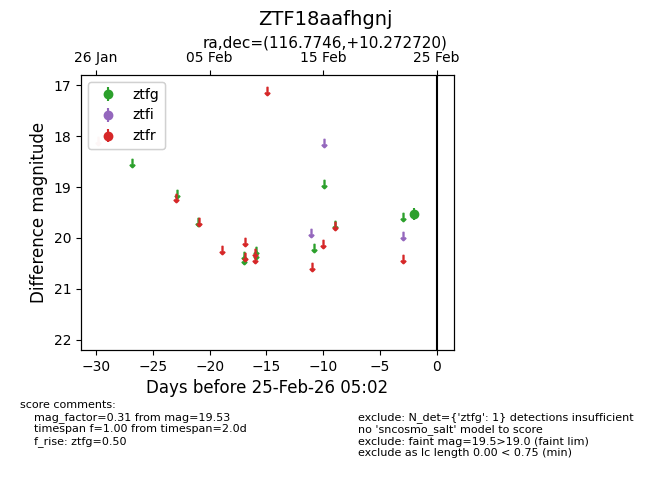
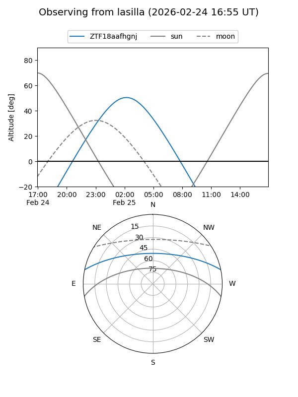
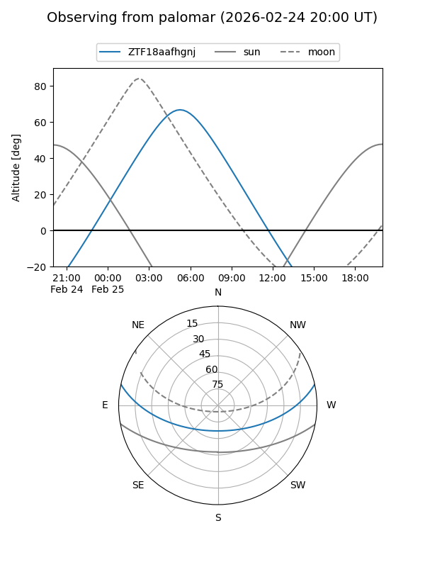

ZTF18aafhgnj
Target ZTF18aafhgnj at 2026-02-25 05:03
Aliases and brokers:
FINK: link
Lasair: link
ALeRCE: link
alt names
ZTF18aafhgnj (ztf,fink_ztf)
Coordinates:
equatorial (ra, dec) = 116.7746,+10.27272
equatorial (HMS+DMS) = 07:47:05.90,+10:16:21.79
galactic (l, b) = (209.8864,+16.97260)
Flags:
Photometry:
last ztfg=19.53
1 ztfg detections
Lightcurve

Visibility


Additional plots